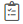
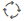
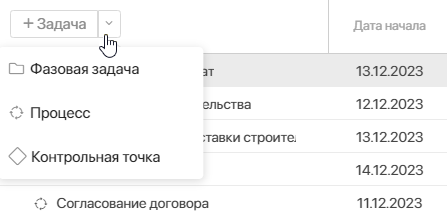
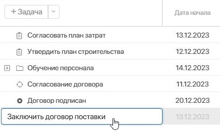
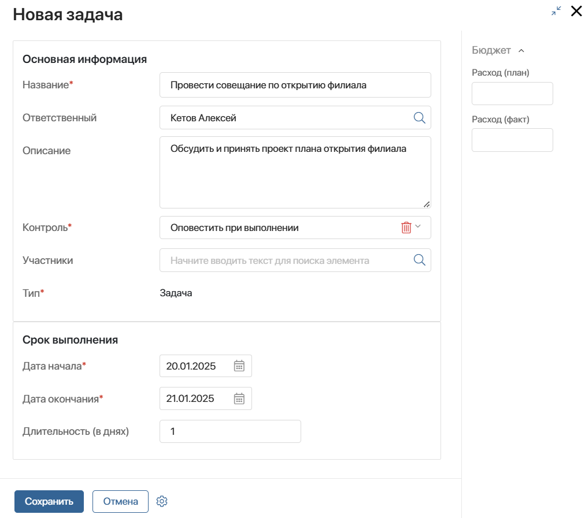
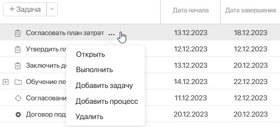

Типы задач плана
Вы можете создавать следующие типы задач в плане проекта:
- Задача () — стандартная задача с установленными сроками выполнения. В плане проекта отображается в виде отрезка голубого цвета.
- Контрольная точка () — создаётся на том этапе проекта, когда нужно проконтролировать результаты работ, выполненных в установленные сроки. Для задачи этого типа можно указать только дату начала при её создании. В плане отмечается в виде ромба фиолетового цвета — если ещё не выполнена, и в виде ромба зелёного цвета — если выполнена.
Задачи плана с типами Задача и Контрольная точка назначаются ответственным сотрудникам после публикации плана проекта. Эти задачи можно просмотреть:
- в разделе Задачи в группе Проектные задачи;
- в карточке проекта на вкладке Календарный план. Для этого наведите курсор на название задачи, нажмите значок три точки и выберите Открыть;
- в карточке проекта в виджете Все задачи.
- Процесс () — вы можете выбрать бизнес-процесс, который нужно запустить в определённый момент выполнения плана. Задачу этого типа можно просмотреть только в плане проекта. Она отображается в виде отрезка серого цвета, если процесс ещё не запущен, и оранжевого — если процесс запустился или уже завершён. При этом вы увидите процент выполнения процесса. Когда процесс завершится, задача отобразится выполненной.
При создании задачи типа Процесс нужно указать дополнительные данные: контекст, бизнес-процесс, переменная и входные параметры бизнес-процесса.
Задача типа Процесс по умолчанию начинается в дату, указанную в её карточке. Если настроено последовательное выполнение, процесс запустится только после завершения предшествующей связанной задачи.
Обратите внимание, вы можете начать процесс вручную в любое время. Для этого перейдите в план проекта и откройте форму задачи типа Процесс. Затем в поле Связанный процесс нажмите на виджет Запуск задачи-процесса из элемента плана проекта.
- Фазовая задача () — используется для группировки задач других типов в плане. Продолжительность этой задачи определяется длительностью всех включённых в неё задач. В плане она показана в виде отрезка розового цвета. Задачу этого типа можно просмотреть только в плане проекта. Фазовая задача будет выполнена, когда выполнятся все включённые в неё задачи плана.
Обратите внимание, администратор системы может изменить цвет для каждого типа задач в плане проекта.
Добавить задачу в план
Чтобы создать задачу в плане проекта, откройте его в режиме редактирования и выполните следующие действия:
- Определите тип новой задачи и выберите его в левом верхнем углу плана:
- нажмите +Задача — чтобы добавить элемент плана с типом Задача;
- раскройте меню и нажмите на нужное название — чтобы создать задачу этого типа.

Также элемент плана с типом Задача можно добавить, указав название задачи в пустой строке плана. Затем нажмите Enter. Созданная таким образом задача по умолчанию имеет текущую дату начала, а её исполнителем является автор задачи. В дальнейшем вы можете отредактировать эти поля.

После этого откроется форма создания задачи.
начало внимание
При создании задачи для выбора доступны только пользователи с лицензией ELMA365 Проекты.
конец внимание
- Укажите название и описание задачи, выберите ответственного. Обратите внимание, поле Тип* недоступно для редактирования, т к. его значение задано на предыдущем шаге. Заполните другие поля, список которых зависит от выбранного типа:
- Контроль* — это поле отображается для задач с типами Задача и Контрольная точка. Выберите одну из опций:
- Оповестить при выполнении — установлено по умолчанию. Руководитель проекта получит уведомление о завершении задачи в #ленту;
- Отправить на контроль — руководителю проекта поступить задача проверить результаты выполненной работы;
- Не требуется — отключить опцию контроля;
- Участники — это поле отображается только для задач типа Задача. Здесь можно указать пользователей, которые принимают участие в выполнении задачи. После публикации плана участник:
- не может редактировать и завершать задачу, а также изменять процент её выполнения, в отличие от ответственного;
- может открыть карточку задачи в разделе Задачи в группе Проектные задачи и вести переписку в её #ленте;
- добавляется в группу Участники проекта и получает права доступа, заданные для этой группы;
- Дата начала*, Дата окончания* — укажите сроки выполнения задачи;
- Длительность (в днях) — заполнится автоматически. Если изменить значение в этом поле, дата окончания поменяется в соответствии с указанной длительностью.
Для задач типа Контрольная точка и Фазовая задача в блоке Срок выполнения отобразится только поле Дата начала*; - Расход (план), Расход (факт) — эти поля можно заполнить на боковой панели задачи и использовать для анализа отчёта по расходам проекта. Администратор системы может настроить такой отчёт. Чтобы просмотреть данные по расходам, откройте задачу в режиме редактирования плана проекта. Незаполненные поля не отобразятся в карточке задачи.

Набор полей может отличаться, если администратор системы изменил внешний вид карточки задачи. Например, добавил поле Плановые загрузки для учёта ресурсов. Подробнее читайте в статье «Работа с ресурсами».
Добавить задачу с типом «Процесс»
Если вы создаёте задачу с типом Процесс, кроме указанных выше полей заполните дополнительный блок Бизнес-процесс:
- Контекст — выберите, с каким элементом будет запущен экземпляр бизнес-процесса: Текущий проект, Текущий план, Текущий элемент плана. Поля формы этого элемента будут переданы в качестве значений для контекстных переменных процесса;
- Бизнес-процесс — укажите бизнес-процесс, который запустится при наступлении даты начала этой задачи по плану проекта;
- Связать с полем — укажите, в какую контекстную переменную бизнес-процесса будет передаваться элемент, выбранный в поле Контекст;
- Настроить входные параметры — соотнесите входные параметры процесса со свойствами элемента, выбранного в поле Контекст.
Добавить подзадачу
Вы можете создавать подзадачи для следующих типов задач:
- Задача — можно добавить подзадачу с типом Задача или Процесс;
- Фазовая задача — можно добавить подзадачу любого типа.
Используйте следующие способы создать подзадачу:
- В списке задач выберите ту, которую хотите сделать дочерней, и перетащите её на родительскую задачу.
- Наведите курсор на название задачи и нажмите на три точки. В контекстном меню выберите:
- Добавить задачу — создать подзадачу с типом Задача;
- Добавить процесс — создать подзадачу с типом Процесс.

начало внимание
Если удалить родительскую задачу, входящие в неё подзадачи также удалятся.
конец внимание
После того, как вы добавите все задачи плана, настройте их календарную последовательность. Для этого определите зависимости между задачами. Подробнее об этом читайте в статье «Связать задачи плана».